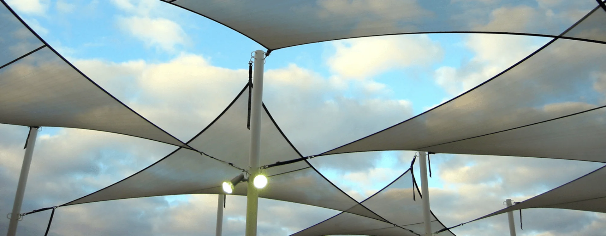
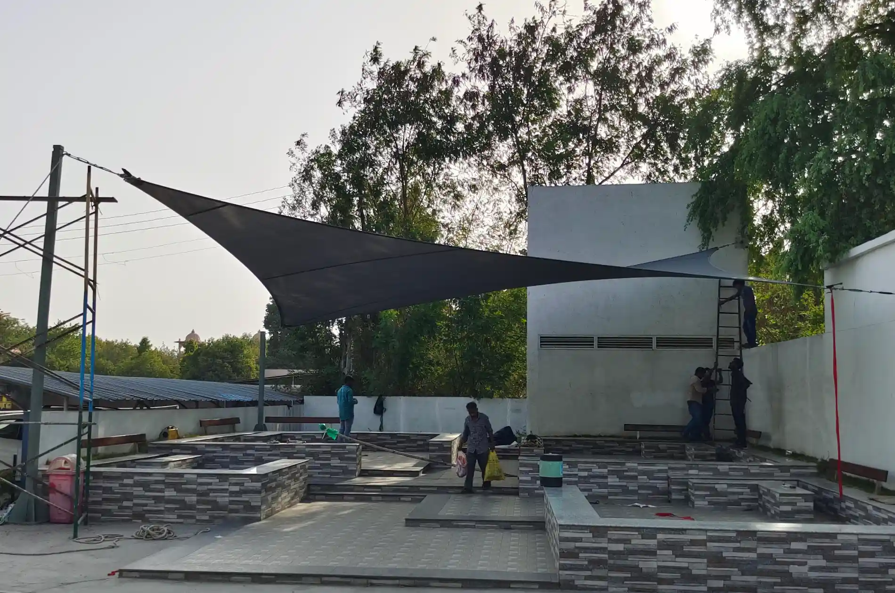

Classic Shade Sail Tensile Structures are used for shading purposes in outdoor spaces. The fabric is stretched between poles or attachment points, creating sail-like formations that provide sun protection in gardens, parks, and other recreational areas etc.
back to product range
Can't find the answer you're looking for? Reach out to our customer support team for further assistance.
Contact SupportA Classic Shade Sail Tensile Structure is a triangular or quadrilateral fabric canopy stretched between anchor points to create a shaded area. It is a simple, elegant, and cost-effective way to provide shade in open spaces.
These structures are highly customizable in terms of shape, size, color, and fabric material. Multiple sails can be combined to create unique geometric designs and cover large areas.
Yes, they are made from UV-resistant, waterproof, and durable fabric. The anchors are secured with high-tensile steel cables to withstand strong winds and rain.
These tensile structures are used in playgrounds, gardens, courtyards, swimming pools, patios, cafes, and walkways etc. to create shaded areas for outdoor comfort.
They offer a cost-effective, stylish shading solution that is easy to install and maintain. Shade sails also provide UV protection, ventilation, and a modern aesthetic for outdoor spaces.
Contact us today to bring your vision to life. As a trusted leader in the design, engineering, manufacturing, and installation of high-quality tensile fabric structures, we offer customized solutions for a diverse range of applications and industries. With extensive project experience and a commitment to excellence, we provide endless possibilities for bespoke design concepts tailored to your unique requirements.
Contact Us